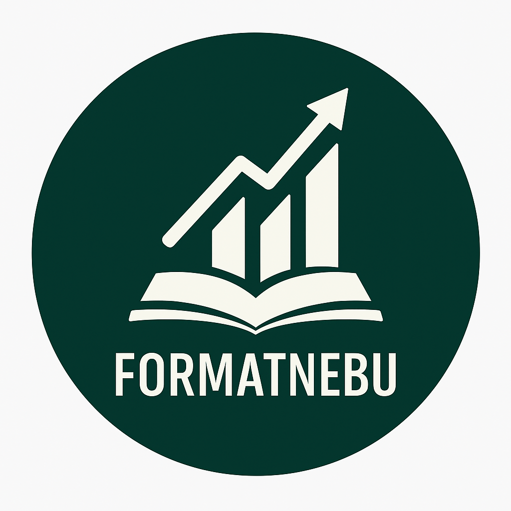
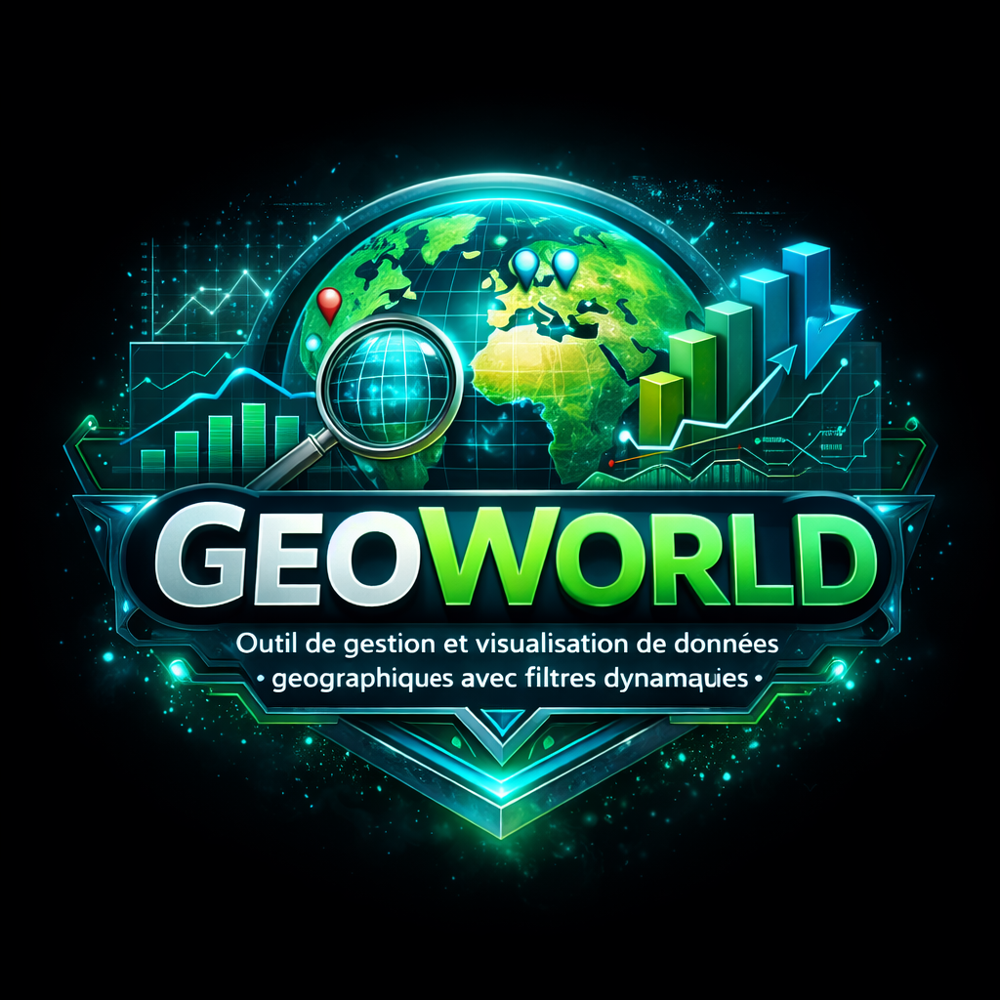
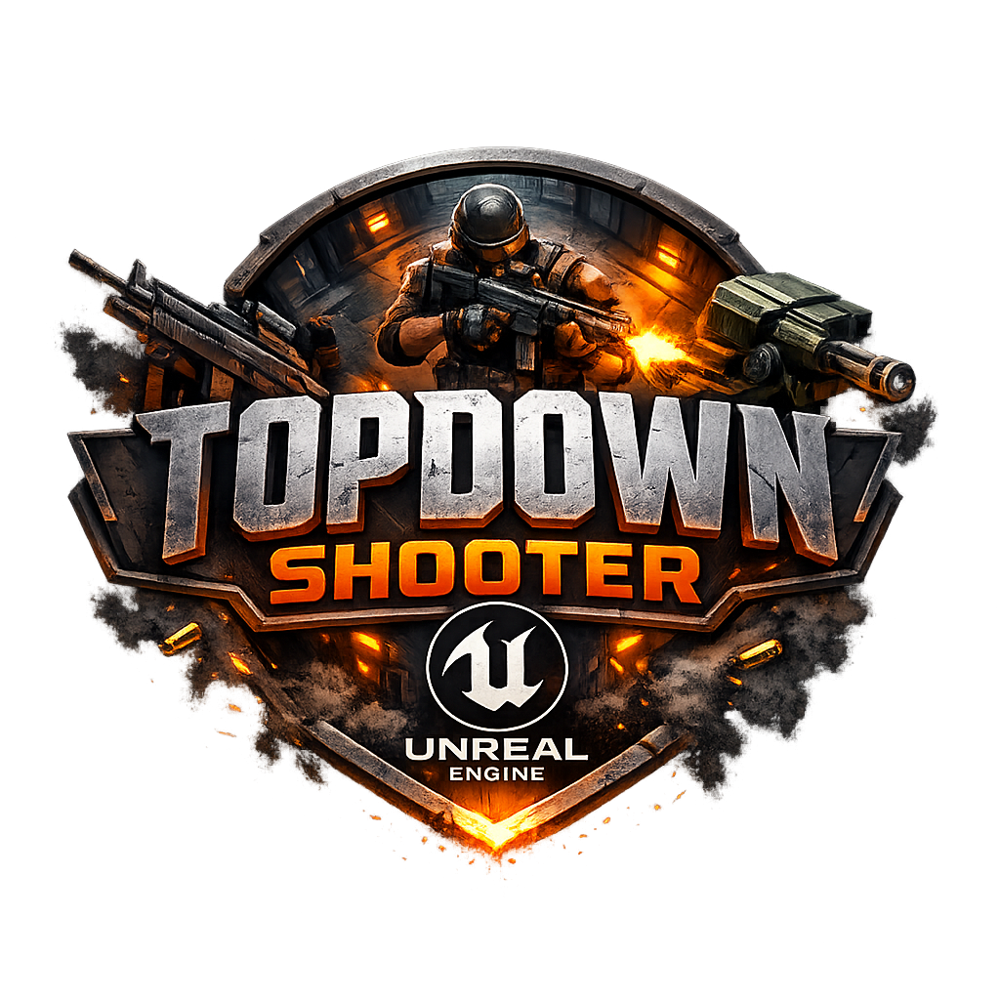
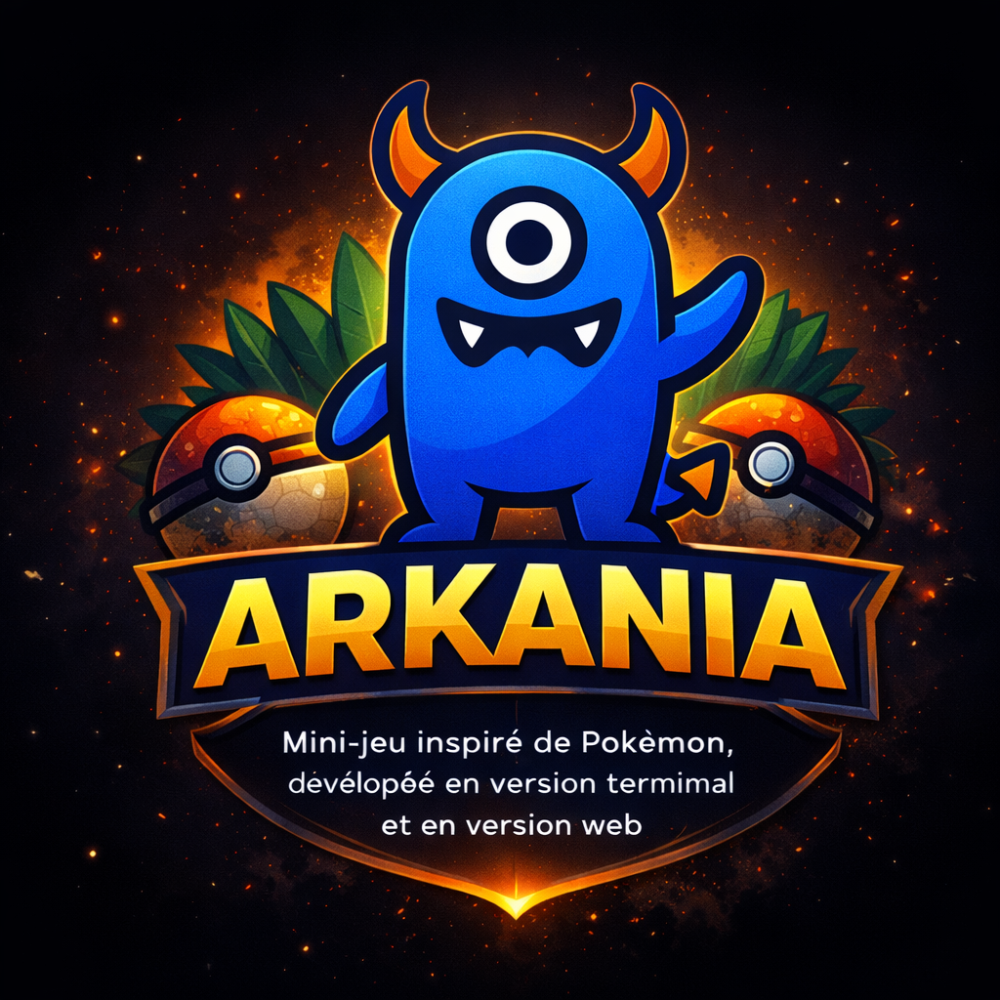
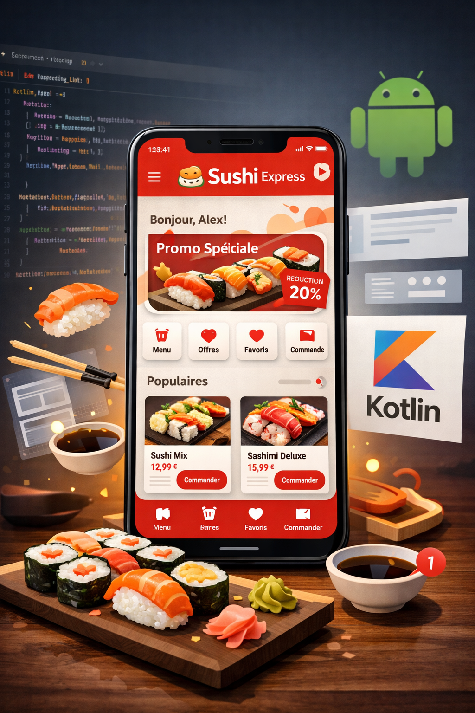
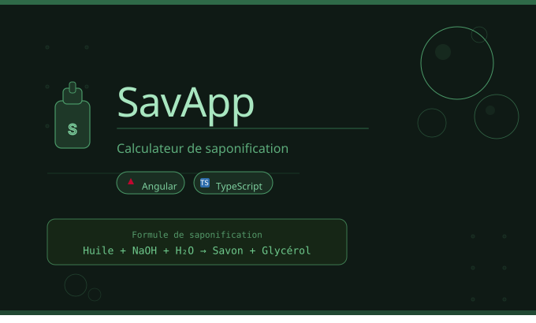
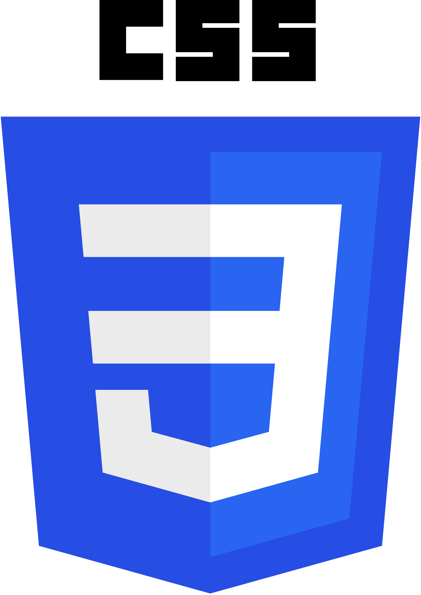

Nolan Jean
|
Étudiant en BTS SIO SLAM et entrepreneur. Je développe des applications web et pilote des projets business en parallèle de ma formation.
Profil
Actuellement en 2ème année de BTS SIO option SLAM au lycée Léonard de Vinci, je construis des applications web en PHP, Kotlin et Python. En parallèle, je développe deux activités : Olevia, une marque de cosmétiques dont je gère toute la partie numérique, et FormatNebu, un projet d'éducation financière. Ce double parcours dev + entrepreneuriat me pousse à aller au-delà du code.
Ma Formation : BTS SIO
Le BTS Services Informatiques aux Organisations est une formation de niveau Bac+2 qui forme des techniciens capables de gérer et développer des solutions informatiques au sein des organisations.
Pourquoi SLAM ?
J'ai choisi l'option SLAM car elle correspond parfaitement à ma passion pour la création logicielle et le développement d'applications. Cette spécialisation me permet d'allier créativité et logique, tout en développant des compétences techniques recherchées (PHP, Kotlin, Python, bases de données). De plus, mes projets entrepreneuriaux (Olevia, FormatNebu) me permettent d'appliquer directement ces compétences dans un contexte professionnel concret.
Parcours Professionnel
Et mes projets de vie
-

2022 - 2024
Baccalauréat STMG – Option SIG
Bac technologique orienté vers la gestion, le management et les systèmes d'information. Cette formation m'a permis d'acquérir des bases solides en organisation, en économie, ainsi qu'une première approche concrète des outils numériques et des systèmes d'information.
-

Juillet - 2024
Conseils en actifs numériques
Accompagnement de plusieurs associés et entrepreneurs dans la compréhension et la gestion d'actifs numériques, avec une approche pédagogique adaptée à leurs besoins et à leur niveau de connaissance.
-

Septembre 2024
1ère année BTS SIO
Formation axée sur le développement d'applications et la gestion de projets informatiques. Cette première année m'a permis de renforcer mes compétences en programmation, en bases de données et en logique algorithmique.
-

Janvier 2025
Entrepreneuriat
Lancement de Olevia, une marque de cosmétiques alliant qualité, accessibilité et esthétisme. Je suis en charge de l'ensemble de la partie numérique (site web, présence en ligne, automatisation), ainsi que des prévisions financières, des investissements et de la stratégie globale de développement.
-
Mai - Juin 2025
Stage BTS SIO 1ère année - Olevia
Stage de 6 semaines au sein de mon entreprise Olevia. Missions principales : réalisation du site web sur WordPress, optimisation SEO pour améliorer la visibilité en ligne, et développement d'une mini-application de suivi de stock pour automatiser la gestion des produits.
📄 Consulter le compte rendu de stage -

Juin 2025
FormatNebu
Création d'une activité dédiée à la vulgarisation de l'investissement et à l'éducation financière. Je conçois des formations accessibles à tous, gère la stratégie de contenu, la partie technique (site web, automatisation) ainsi que le suivi et l'analyse des performances.
-
Septembre 2025
2ème année BTS SIO – Option SLAM
Deuxième année de mon cursus, axée sur des projets plus concrets et de plus grande envergure. Cette formation me permet d'approfondir mes compétences en développement logiciel, d'améliorer ma maîtrise des langages de programmation et des frameworks, et de renforcer mon autonomie sur des projets professionnels.
-
Janvier - Février 2026
Stage BTS SIO 2ème année - Olevia
Stage de 6 semaines au sein d'Olevia. Missions principales : développement d'une mini-application de scraping pour organiser des jeux-concours Instagram et faire gagner des lots de produits, optimisation SEO avancée, amélioration du site web, et montée en compétences sur l'IA, Java et Spring Boot.
📄 Consulter le compte rendu de stage
Projets Phares

GeoWorld
Outil de gestion et visualisation de données géographiques avec filtres dynamiques.
Bataille Navale
Mini-jeu développé en Kotlin et jouable sur le terminal.

TopDownShooter
Mini-jeu réalisé sous Unreal Engine 5 dans le but de découvrir le moteur.

KotlinMonster / Arkania
Mini-jeu inspiré de Pokémon, développé en version terminal et en version web (non finalisée), dans le cadre d'un projet de classe.

Sushi App
Application mobile de commande de sushis développée en Kotlin.

SavApp
Application web de création de recettes de savon, développée avec Angular.
Domaines de compétences
Développement
Création d'applications web et logicielles, orientées performance et maintenabilité.


Environnements 3D & Jeux
Conception d'environnements interactifs et logiques de jeu.
Économie & Stratégie
Analyse et prise de décision orientée croissance et performance.
Veille Technologique
Dans le cadre de mon BTS SIO, j'ai réalisé une veille approfondie sur les solutions Layer 2 — une technologie clé pour la scalabilité d'Ethereum et l'avenir des applications décentralisées.
Qu'est-ce que la veille technologique ?
La veille technologique, qui fait partie intégrante de la veille stratégique, consiste à surveiller les avancées techniques et les innovations dans un domaine spécifique d'activité. Elle englobe la surveillance, la collecte, le partage et la diffusion d'informations visant à anticiper ou à se renseigner sur les évolutions en matière de recherche, de développement, de brevets, de lancements de nouveaux produits, de matériaux, de processus, de concepts et d'innovations de fabrication. Son objectif est d'évaluer l'impact de ces évolutions sur l'environnement et l'organisation concernée.
Suivre les matières premières, produits, procédés, brevets et l'état de l'art scientifique et technique.
Permettre aux bureaux d'études d'être informés des baisses de coût ou d'augmentation de qualité possibles.
Mieux connaître ses limites de production, sa concurrence future et les évolutions de son environnement.
Pourquoi le Layer 2 ?
Depuis son lancement en 2015, Ethereum est la blockchain de référence pour les DApps et la DeFi. Sa croissance a mis en évidence une limitation majeure formalisée par Vitalik Buterin : le trilemme de la blockchain — il est extrêmement difficile d'atteindre simultanément décentralisation, sécurité et scalabilité.
Le réseau principal Ethereum (Layer 1) ne traite que 15 à 30 TPS, contre 1 700 TPS pour Visa. Cela engendre des frais de gas élevés (jusqu'à plusieurs dizaines de dollars) et des délais de confirmation. Les solutions Layer 2 traitent les transactions hors chaîne tout en héritant de la sécurité du L1.
Optimistic Rollups
Arbitrum · Optimism
Regroupent des centaines de transactions en un seul lot soumis à Ethereum. Les transactions sont considérées valides par défaut.
- Un sequencer regroupe et exécute les transactions off-chain
- Il publie un state root cryptographique sur Ethereum
- Fenêtre de 7 jours pour soumettre une fraud proof
- Sans contestation → transactions définitivement acceptées
ZK Rollups
zkSync Era · Starknet · Polygon zkEVM
Utilisent les Zero-Knowledge Proofs — une preuve mathématique garantit l'exactitude des transactions sans révéler leur contenu.
- Transactions exécutées et agrégées off-chain
- Un circuit génère une validity proof (SNARK ou STARK)
- La preuve est vérifiée par un smart contract sur Ethereum
- Retrait vers L1 quasi-instantané
Comparatif des principales solutions L2
| Solution | Type | TPS max | Frais moyens | Sécurité |
|---|---|---|---|---|
| Arbitrum One | Optimistic | ~40 000 | ~0.01$ | ★★★★☆ |
| Optimism | Optimistic | ~2 000 | ~0.002$ | ★★★★☆ |
| zkSync Era | ZK Rollup | ~100 000 | ~0.001$ | ★★★★★ |
| Polygon zkEVM | ZK Rollup | ~2 000 | ~0.01$ | ★★★★★ |
| Starknet | ZK Rollup | ~100 000 | ~0.0005$ | ★★★★★ |
Source : L2Beat.com — données agrégées Mars 2026. TPS indiqués = capacités théoriques maximales.
Enjeux pour les développeurs
Impact sur les DApps
Les micro-transactions (gaming, NFT) deviennent viables. De nouveaux outils émergent : Foundry, Hardhat avec plugins L2, Viem/Wagmi pour le frontend.
Zero-Knowledge Proofs
Les zk-proofs dépassent la blockchain : identité numérique, confidentialité des données. Des langages spécialisés comme Cairo (Starknet) ou Noir permettent d'écrire des circuits zk.
Interopérabilité
La multiplication des L2 fragmente la liquidité. Le Superchain d'Optimism (OP Stack) et EIP-7683 visent un écosystème L2 unifié sans friction pour l'utilisateur.
À retenir : Maîtriser les outils L2 (Hardhat, Foundry, Viem), comprendre les différences Optimistic vs ZK Rollups, et se former aux zk-proofs sont des compétences de plus en plus demandées dans le secteur Web3.
Sources utilisées
Tableau de bord des Layer 2 Ethereum (données en temps réel)
Documentation officielle Ethereum sur le Layer 2
« An Incomplete Guide to Rollups » — vitalik.eth.limo, 2021
Documentation technique zkSync Era — docs.zksync.io
Documentation Arbitrum — docs.arbitrum.io
Podcast et articles sur l'écosystème Ethereum et L2